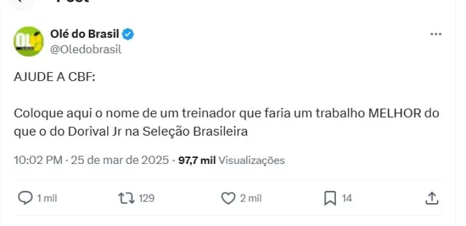
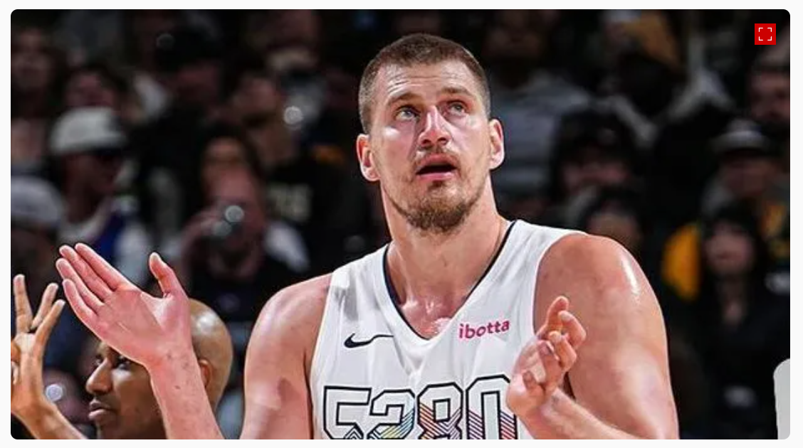
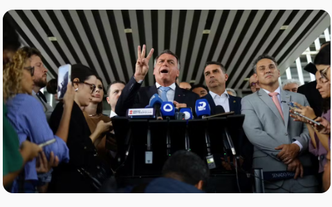
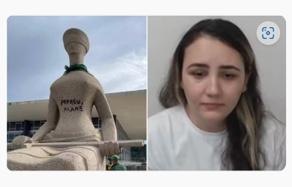

Últimos Fuxicos
Conteúdo do fuxico do dia.
Torcida não perdoa! Memes tomam conta da web após vexame da Seleção
O desempenho ruim foi suficiente para os torcedores criarem diversos memes nas redes sociais.
O Brasil perdeu para a Argentina em uma das derrotas mais vexatórias da história da Seleção Brasileira. Não apenas pelo placar, mas também pela falta de competitividade e de recursos técnicos diante da atual campeã mundial. O desempenho ruim foi suficiente para os torcedores criarem diversos memes nas redes sociais. Um dos alvos foi o lateral Arana, que teve uma atuação muito abaixo com a camisa da Seleção. Durante todo o jogo, o jogador do Atlético-MG não conseguiu criar jogadas, teve dificuldades na marcação e ainda viralizou em um vídeo no qual não consegue conduzir a bola.
Jokic dá show, faz triplo-duplo e Nuggets bate Bucks na NBA
Nikola Jokic teve uma grande performance em seu retorno aos jogos do Denver Nuggets, anotando 39 pontos, 10 rebotes e 10 assistências. Michael Porter Jr. contribuiu com 23 pontos e 10 rebotes, e o time do Colorado derrotou o Milwaukee Bucks por 127-117, na noite de quarta-feira. Christian Braun adicionou 19 pontos e 10 rebotes, Jamal Murray fez 17 pontos e Peyton Watson terminou com 12 para Denver (46-28), que quebrou uma sequência de duas derrotas consecutivas em casa. Jokic, que perdeu os últimos cinco jogos devido a uma lesão no tornozelo esquerdo e uma dor no cotovelo direito, registrou seu 30º triple-double da temporada e o 160º de sua carreira. O Milwaukee (40-32) esteve sem Giannis Antetokounmpo (torção no pé esquerdo) e Damian Lillard, que ficará fora de jogo devido a uma trombose venosa profunda. Brook Lopez liderou o Milwaukee com 26 pontos, Ryan Rollins adicionou 17, Gary Trent Jr. fez 16 pontos, Taurean Prince e AJ Green 15 cada, Kevin Porter Jr. marcou 12 pontos e Kyle Kuzma 10.
Os 2 temas que devem pautar o julgamento de Bolsonaro no STF
Entenda quais são os próximos passos após Bolsonaro virar réu Crimes atribuídos a Bolsonaro podem somar 39 anos de prisão
'Perdeu, mané'
Pichadora diz que não sabia de valor simbólico da estátua e pede perdão
1ª Turma do STF tem maioria para manter Léo Índio como réu
